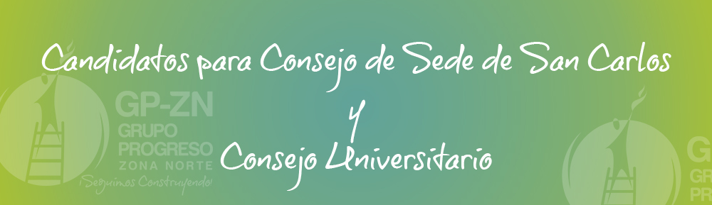
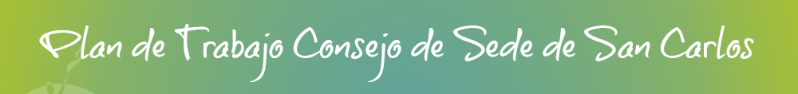

Ever Daniel Leitón Medina
- Candidato TITULAR
- Estudiante de:
- Ingeniería del Software
- Asistencia Administrativa
Juan Daniel Pérez Trejos
- Candidato SUPLENTE
- Estudiante de:
- Ingeniería del Software
Plan de trabajo Consejo de Sede San Carlos y Consejo Universitario 2018 - 2019

- Lograr una consolidación más fuerte del movimiento estudiantil.
- Promover espacios que permitan el dialogo, paz negociación y empoderamiento.
- Infraestructura: Apoyar las gestiones pertinentes a la construcción del eco campus.
- Lockers: Adquirir al menos 2 lockers (casilleros) para alquiler a estudiantes. Con el fin de logras más proyectos.
- Proyecto de venta de artículos promocionales: con los fondos que se recauden se pretende hacer compra de dichos artículos.
- Participación en actividades festivas costarricenses: actividades cívicas, días especiales y demás.
- Campañas ecológicas: Organizar campañas de recolección de basura, material reciclable…
- Espacios informativos: Mejorar el aprovechamiento de los espacios informativos de la sede, como lo es la pizarra informativa, carteles y demás.
- Charlas de Primeros Auxilios: pedir colaboración de la Cruz Roja para llevar a cabo las charlas para estudiantes.
- Actividades Recreativas: llevar a cabo actividades recreativas para los estudiantes.
- Buzón de sugerencias: poner a disposición de los estudiantes un buzón donde puedan colocar las sugerencias
- Busca de la identidad UTN: los estudiantes se deben motivar para que lleven el sello UTN, que tengan amor por la Universidad donde se estan formando, que sientan que es un segundo hogar. Esto se logrará haciendo actividades que involucren a gran parte de la comunidad estudiantil, de la mano con las otras representaciones estudiantiles, ante consejos de sede, consejos de carrera, y asociaciones de estudiantes de las distintas sedes.
- Consolidar el movimiento estudiantil: Lograr una consolidación más fuerte del movimiento estudiantil mediante
- Promover espacios que permitan el diálogo, paz, negociación y empoderamiento.
- Infraestructura: Apoyar las gestiones pertinentes para que se lleven a cabo las construcciones a las estructuras de las sedes universitarias que lo necesiten.
- Campañas ecológicas: Organizar campañas de gestión ambiental.
- Buzón de sugerencias: poner a disposición de los estudiantes un buzón donde puedan colocar las sugerencias
- Unificar el movimiento estudiantilImpulsar y potenciar actividades que promuevan la convivencia entre representantes estudiantiles de las sedes y Federación de Estudiantes, con el fin de unificar el movimiento estudiantil.
- Alianzas que beneficien estudiantesCrear alianzas con el fin de lograr beneficios estudiantiles tanto a nivel nacional como internacional.